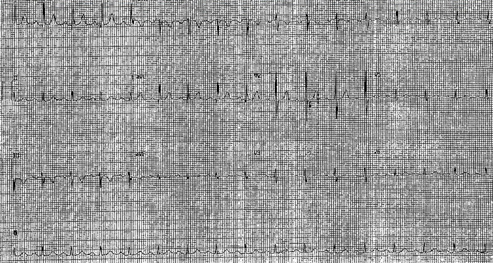
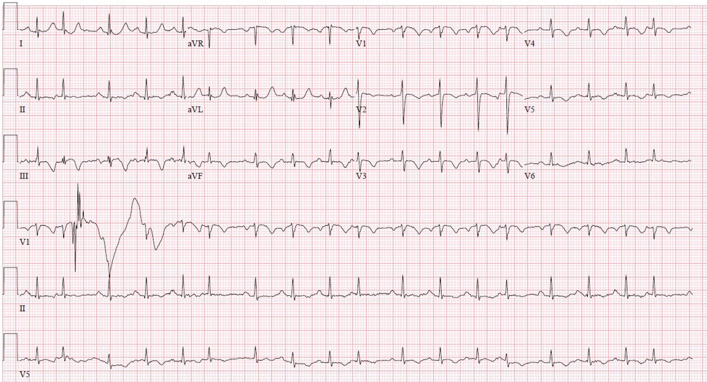
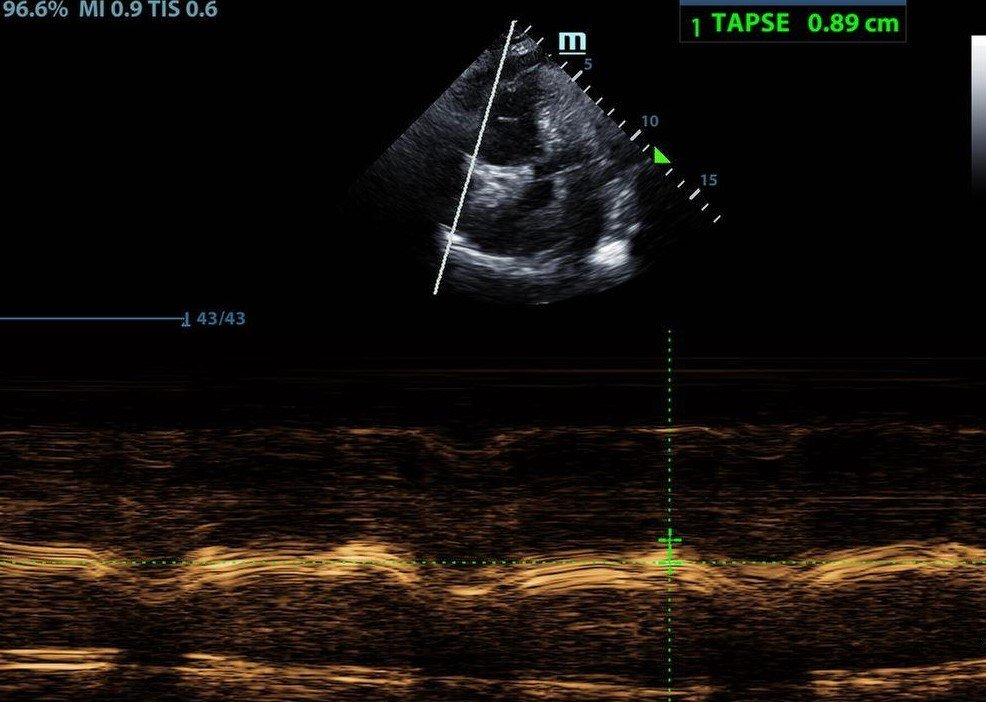
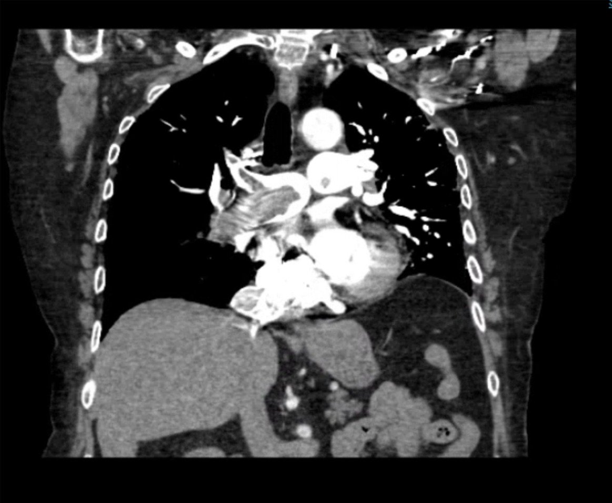
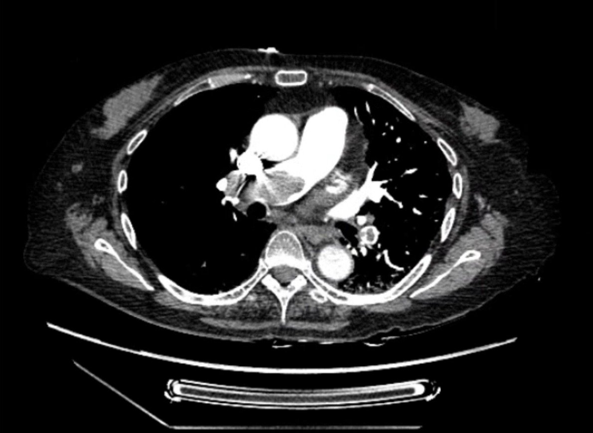
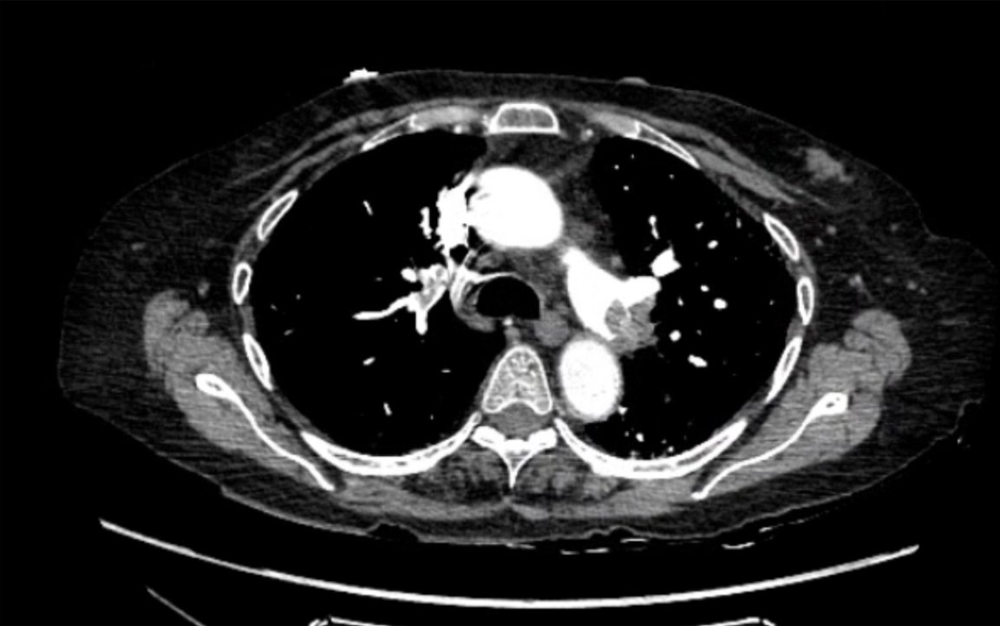
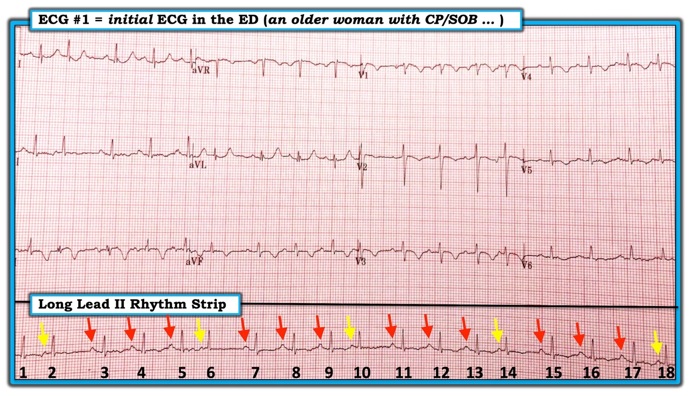

05/04/2019 — Một phụ nữ lớn tuổi được chuyển đến bạn vì đau ngực, khó thở và troponin dương tính – bà có cần vào phòng thông tim ngay không?
Bản dịch tiếng Việt của bài "An elderly woman transferred to you for chest pain, shortness of breath, and positive troponin – does she need the cath lab now?" – Dr. Smith’s ECG Blog. Giữ nguyên toàn bộ 10 hình ảnh và 2 video của bản gốc.
Tác giả: Alex Bracey, có chỉnh sửa của Smith và Meyers
Một bệnh nhân nữ ở độ tuổi 70 đến khoa cấp cứu (ED) vào lúc giao ca, khi tôi đang làm việc ở khu cấp tính (mức độ nặng trung bình). Tôi cầm hồ sơ lên và ghi chú phân loại (triage) cho biết bệnh nhân được chuyển từ một bệnh viện khác, với “thay đổi trên điện tâm đồ” và troponin tăng, để chuyên khoa tim mạch đánh giá nhồi máu cơ tim không ST chênh lên (NSTEMI). Các triệu chứng vẫn đang tiếp diễn.
Lúc này đã thấy tò mò, tôi xem điện tâm đồ và thấy như sau:

Điện tâm đồ nền lưu trong hồ sơ từ bệnh viện tuyến trước:


Đây là điện tâm đồ đầu tiên của bệnh nhân tại bệnh viện chúng tôi:


Diễn giải điện tâm đồ của Meyers: Các điện tâm đồ mới cho thấy nhịp nhanh xoang với đoạn ST dạng lồi dẫn vào các sóng T đảo ngược lớn ở các chuyển đạo trước và dưới. Hình thái này phù hợp với nhiều ví dụ trước đây về tăng gánh tim phải cấp mà chúng tôi đã trình bày trên blog này. Ngoài ra, ngay cả khi các sóng T đảo ngược này là do tái tưới máu của OMI (dù thực tế chúng không có hình thái đúng cho trường hợp đó), chúng thường sẽ đi kèm với sự cải thiện đáng kể triệu chứng của bệnh nhân, trong khi bệnh nhân này vẫn đang khó thở nặng trong lúc ghi điện tâm đồ này. Các sóng T đảo ngược cũng không “quá lớn” so với QRS — tức là không lớn bất tương xứng so với mức gặp trong tái tưới máu hay tăng gánh tim phải cấp — như các sóng T do bệnh cơ tim Takotsubo được thấy trong bài này.
Quay lại ca bệnh:
Vừa mới đọc một bài về thuyên tắc phổi (PE; bài này), tôi lập tức lo ngại rằng bệnh nhân bị PE cấp, ngay cả khi chưa thăm khám bệnh nhân.
Tôi mang máy siêu âm vào phòng và thấy một phụ nữ lớn tuổi đang thở oxy qua ống thông mũi, thở gắng sức và nhanh, nhưng tỉnh táo và có thể nói với tôi, giữa những hơi thở hổn hển, rằng bà đột ngột bị khó thở vào ngày trước khi đến viện. Huyết áp của bà bình thường, nhưng bà bị giảm oxy máu nặng khi ngừng hỗ trợ oxy qua ống thông mũi. Trong lúc hỏi bệnh sử, tôi đã ghi được các hình ảnh sau bằng siêu âm tại giường:


Đây là mặt cắt 4 buồng từ mỏm:
Thất phải (RV) nằm ở bên trái màn hình. RV giãn và có vẻ không giảm kích thước trong thì tâm thu. Cũng có dấu hiệu McConnell (mỏm RV tăng động tương đối so với thành tự do RV trong bối cảnh tăng gánh RV). Ngoài ra còn có vận động nghịch thường của vách liên thất, với vách bị đẩy cong vào thất trái (LV).
Đây là mặt cắt trục ngắn cạnh ức:
RV nằm ở phía trên màn hình (gần đầu dò nhất). RV lớn hơn nhiều so với LV, và có thể thấy “dấu hiệu chữ D” (D sign), khi vách liên thất bị áp lực RV cao đẩy dẹt thành phần thẳng của chữ “D” in hoa.
Với tập hợp triệu chứng này, tôi rất tin rằng bệnh nhân bị một PE cấp, đáng kể, gây tăng gánh tim. Chúng tôi bắt đầu truyền heparin liên tục. Bệnh nhân kể tiếp rằng bà đã bị chấn thương lưng 3 tháng trước và hầu như không rời khỏi ghế sofa trong những tháng sau đó. Cơn khó thở này xảy ra trùng với lúc bà cố gắng vận động nhiều hơn vào hôm qua.
Chụp CT mạch phổi (CTPA) cho thấy như sau:






Hình này cho thấy các khuyết thuốc rất lớn ở cả hai động mạch phổi chính, phù hợp với PE.
Bệnh nhân được chuyển đến khu hồi sức của khoa cấp cứu, tại đây, sau khi trao đổi với chuyên khoa hô hấp/hồi sức tích cực, bệnh nhân được dùng tPA nửa liều. Trong 12 giờ tiếp theo, công hô hấp của bà cải thiện rõ rệt và bà không còn cần thở oxy hỗ trợ khi ra viện 4 ngày sau đó. Bà được cho xuất viện về nhà với một thuốc chống đông đường uống trực tiếp (DOAC) và vật lý trị liệu tại nhà.
Những điểm cần học:
Điện tâm đồ có thể có giá trị chẩn đoán tăng gánh tim phải cấp nặng. Bạn phải nhận ra được hình ảnh này và phân biệt nó với các dấu hiệu của nhồi máu cơ tim do tắc (Occlusion MI).
Xem bài này để biết thêm các ví dụ về hình thái đặc trưng của tăng gánh tim phải cấp.

===================================
Bình luận của KEN GRAUER, MD (5/4/2019):
===================================
Chúng tôi xin CẢM ƠN Dr. Alex Bracey về phần trình bày bổ ích này cùng phần bàn luận xuất sắc về một phụ nữ lớn tuổi được chuyển đến khoa cấp cứu từ một bệnh viện tuyến ngoài vì đau ngực, khó thở và kết quả troponin ban đầu dương tính.
- Tôi tập trung bình luận vào: i) Một số khái niệm chung về việc sử dụng điện tâm đồ như một phần trong chẩn đoán lâm sàng PE cấp: và, ii) Một số khía cạnh thú vị về điện tâm đồ đầu tiên tại khoa cấp cứu trong ca này ( = Điện tâm đồ #1, mà tôi đã sao lại và đánh dấu trong Hình 1).


=================
BÌNH LUẬN Về Chẩn đoán PE Cấp tại Khoa cấp cứu (ED): Có lẽ điểm quan trọng nhất cần “Ghi nhớ” từ ca này — là cách thức đa chiều giúp đưa ra chẩn đoán xác định PE cấp tại khoa cấp cứu một cách nhanh chóng đến vậy.
- Tôi phải thừa nhận rằng tôi đã không nắm được “bản chất” thực sự của bệnh sử trong ca này từ tiêu đề 2 dòng của bài viết. Tôi nói điều này không phải với ý tiêu cực (vì chính tôi cũng sẽ chọn một mô tả ban đầu gần như y hệt cho ca này nhằm tối ưu hóa các điểm giảng dạy). Ý của tôi chỉ là để nhấn mạnh rằng, “Phải có mặt ở đó mới biết!” khi đánh giá mỗi bệnh nhân mới được giao cho bạn. Dr. Bracey đã nhận ra chỉ trong vài giây sau khi bước vào phòng bệnh nhân này — rằng bệnh sử thực sự đang “gào thét” suy hô hấp cấp (bệnh nhân giảm oxy máu nặng, phụ thuộc oxy và khó thở rõ rệt — và, bà mô tả các triệu chứng khởi phát đột ngột chỉ mới từ hôm trước). Bệnh sử đau ngực được kể lại dường như chỉ là “chi tiết thêm vào sau”. Diễn giải — Ngay cả khi chưa xem điện tâm đồ đầu tiên của bệnh nhân, hay trước khi tiến hành bất kỳ đánh giá chẩn đoán nào — kiểu bệnh sử và biểu hiện lâm sàng này đang nói rằng, “Tôi bị một PE cấp lớn cho đến khi bạn chứng minh được điều ngược lại”.
- Các khả năng chẩn đoán được đặt ra từ những thay đổi ST-T thấy trên điện tâm đồ #1 bao gồm bệnh mạch vành cấp/mới xảy ra, bệnh cơ tim Takotsubo và PE cấp. Ngay cả trước khi bàn đến các điểm then chốt (pearl) sắc sảo trong diễn giải điện tâm đồ của Dr. Meyers (vốn nghiêng mạnh về chẩn đoán PE cấp) — bệnh sử thực sự trong ca này (đã nêu ở gạch đầu dòng trước) làm tăng đáng kể khả năng thống kê rằng các thay đổi ST-T trên điện tâm đồ #1 là do PE cấp.
- Siêu âm tim tại giường sau đó được Dr. Bracey thực hiện. Với biểu hiện lâm sàng như vậy — siêu âm tim này đã có giá trị chẩn đoán!
- Điểm MẤU CHỐT: Mặc dù Dr. Bracey không nói trực tiếp — có vẻ như chỉ mất không quá vài phút đánh giá dựa trên bệnh sử, tình trạng giảm oxy máu nặng của bệnh nhân, điện tâm đồ đầu tiên + siêu âm tim tại giường để xác định chẩn đoán PE cấp. Chụp CT mạch phổi đã xác nhận thêm — dù điều này không cần thiết để bắt đầu điều trị tối ưu.
=================
Về chính Điện tâm đồ Đầu tiên: Tôi diễn giải điện tâm đồ đầu tiên ghi tại khoa cấp cứu ở bệnh nhân này ( = Điện tâm đồ #1) như sau:
- Phân tích Mô tả — Điện thế tương đối thấp. Nhịp là nhịp nhanh xoang (các mũi tên ĐỎ) — kèm nhịp tư nhĩ (cứ mỗi nhát thứ 4 lại xuất hiện sớm và có hình thái sóng P khác => mỗi nhát thứ 4 là một PAC = các mũi tên VÀNG). Khoảng PR và QRS có vẻ bình thường; QTc có vẻ ít nhất là kéo dài ở mức giới hạn. Trục mặt phẳng trán bình thường. Thành phần âm sâu của sóng P ở chuyển đạo V1 phù hợp với LAA (bất thường nhĩ trái — Left Atrial Abnormality). Không thấy dấu hiệu nào khác trên điện tâm đồ của lớn buồng tim. Các dấu hiệu nổi bật nhất là các thay đổi ST-T rất rõ rệt ở nhiều chuyển đạo (đoạn ST dạng vòm (coving) với ST chênh lên không quá mức tối thiểu ở các chuyển đạo III, aVR, V1; sóng T đảo ngược sâu, đối xứng ở một số chuyển đạo; hình ảnh ST-T soi gương ở các chuyển đạo III và aVL).
- Nhận định Lâm sàng — Như Dr. Meyers đã nêu, các thay đổi ST-T và diễn biến lâm sàng của bệnh nhân này không giống như những gì được kỳ vọng ở tái tưới máu mạch vành cấp (trừ khi có lẽ có bệnh nhiều nhánh mạch vành cấp … ). Thay vào đó — sóng T đảo ngược sâu, đối xứng ở nhiều chuyển đạo thành trước và thành dưới phù hợp hơn nhiều với chẩn đoán PE cấp.
=================
Các Điểm Bổ sung: Điện tâm đồ thường sẽ không giúp ích cho việc chẩn đoán PE cấp. Dù vậy — ca này minh họa một trường hợp trong đó điện tâm đồ (cùng với biểu hiện lâm sàng của bệnh nhân này) đã gợi ý mạnh mẽ chẩn đoán ngay cả trước khi làm siêu âm tim tại giường và chụp CT mạch phổi.
- Ở một người lớn bị khó thở mới khởi phát hoặc đau ngực kiểu màng phổi (hoặc không điển hình) — dấu hiệu sóng T đảo ngược ở thành trước (tức là, ở các chuyển đạo V1,V2,V3) sẽ thường do PE cấp hơn nhiều so với do bệnh mạch vành cấp. Điều này đặc biệt đúng NẾU cũng có sóng T đảo ngược ở thành dưới (ở các chuyển đạo II, III, aVF) — đây là vùng chuyển đạo còn lại đặc trưng biểu hiện thay đổi ST-T của “tăng gánh” RV cấp. Những dấu hiệu điện tâm đồ này phù hợp với kiểu sóng T đảo ngược mà chúng ta thấy trên điện tâm đồ #1 (ngoài ra còn cho thấy sóng T đảo ngược mức độ nhẹ hơn lan ra tới tận các chuyển đạo ngực bên).
- Độ nhạy của điện tâm đồ trong việc gợi ý khả năng PE cấp tốt hơn với các PE lớn hơn (đặc biệt là PE dưới diện rộng). Khi các thay đổi ST-T của PE cấp rõ rệt, “trông cấp tính” và lan rộng như trên Hình 1 — gần như chắc chắn bạn đang đối mặt với một PE rất lớn. Ngược lại — các PE kích thước nhỏ đến vừa thì ít có khả năng biểu hiện gì nhiều hơn ngoài nhịp nhanh xoang kèm thay đổi ST-T không đặc hiệu.
- Có những dấu hiệu điện tâm đồ khác cần tìm có thể gợi ý “tăng gánh” RV cấp — đặc biệt khi thấy nhiều dấu hiệu trong số này trong bối cảnh lâm sàng “phù hợp”. Những dấu hiệu điện tâm đồ khác này bao gồm trục mặt phẳng trán lệch phải hoặc không xác định — dấu hiệu S1Q3T3 — RAA (bất thường nhĩ phải) — RBBB hoàn toàn hoặc không hoàn toàn — sóng R nổi bật ở chuyển đạo V1 — sóng S sâu tồn tại dai dẳng ở các chuyển đạo ngực bên — và rung nhĩ. Mặc dù chúng ta không thấy bất kỳ dấu hiệu điện tâm đồ nào khác trong số này (ngoài nhịp nhanh xoang) ở ca này — bệnh sử lâm sàng + các bất thường ST-T rõ rệt và rất đặc trưng trên Hình 1 đã quá đủ để gợi ý mạnh mẽ chẩn đoán PE cấp ở đây.
- Vượt ra ngoài phần cốt lõi: Bạn có để ý thấy rằng mức độ bất thường ST-T ở chuyển đạo V2 ít hơn nhiều so với ở cả chuyển đạo V1 lẫn chuyển đạo V3 không? Dấu hiệu này không ngờ tới vì: i) Về mặt sinh lý, sẽ không hợp lý khi sự tăng tiến QRST bình thường lại biểu hiện biên độ QRS lớn như vậy chỉ ở một chuyển đạo duy nhất này (V2) — trong khi sóng T đảo ngược sâu hơn nhiều ở các chuyển đạo lân cận khác (V1, V3, V4) có phức bộ QRS nhỏ hơn nhiều; và, ii) “Tăng gánh” RV cấp thường rõ nhất ở các chuyển đạo ngực phía trước — vì vậy sóng T đảo ngược nông một cách bất ngờ mà chúng ta thấy ở chuyển đạo V2 cũng không hợp lý xét từ góc độ này. Tôi nghi ngờ có sự đặt sai vị trí điện cực ngực ở chuyển đạo V2 — và mức sóng T đảo ngược “thực sự” ở chuyển đạo V2 gần với những gì chúng ta thấy ở các chuyển đạo V1, V3 và V4 hơn nhiều.
- Cuối cùng — Bạn Có Để ý thấy sự thay đổi hình thái của các nhát #1 và #4 ở chuyển đạo III — so với phức bộ QRS nhỏ hơn nhiều và nhiều pha của các nhát #2 và #3 ở chuyển đạo này không? Dù rõ ràng đây là một điểm mang tính học thuật, không ảnh hưởng đến xử trí lâm sàng — tôi nghĩ cũng hữu ích khi chỉ ra rằng sự thay đổi hình thái QRS này không phải do dẫn truyền lệch hướng — vì nếu đúng như vậy, thì chính các PAC mới là những phức bộ trông khác biệt (tức là các nhát #2 và #6 — chứ không phải #2 và 3). Thay vào đó — sự thay đổi hình thái QRS này nhiều khả năng nhất là kết quả của cử động hô hấp ở bệnh nhân khó thở cấp này! ĐIỂM THEN CHỐT (PEARL): Các chuyển đạo III và aVF có hướng thẳng đứng (tức là nhìn tim từ phía dưới cơ hoành) — và theo kinh nghiệm của tôi, đây là những chuyển đạo dễ thỉnh thoảng cho thấy sự biến đổi khá rõ rệt về hình thái QRS từ nhát này sang nhát khác nhất, đặc biệt ở các bệnh nhân khó thở.
Một lần nữa, chúng tôi xin CẢM ƠN Dr. Alex Bracey đã chia sẻ ca bệnh rất sâu sắc này với chúng tôi!
====================
XEM THÊM:
- Để biết thêm về “Quan điểm của tôi” về chẩn đoán bằng điện tâm đồ đối với PE cấp & tăng gánh RV — BẤM VÀO ĐÂY.